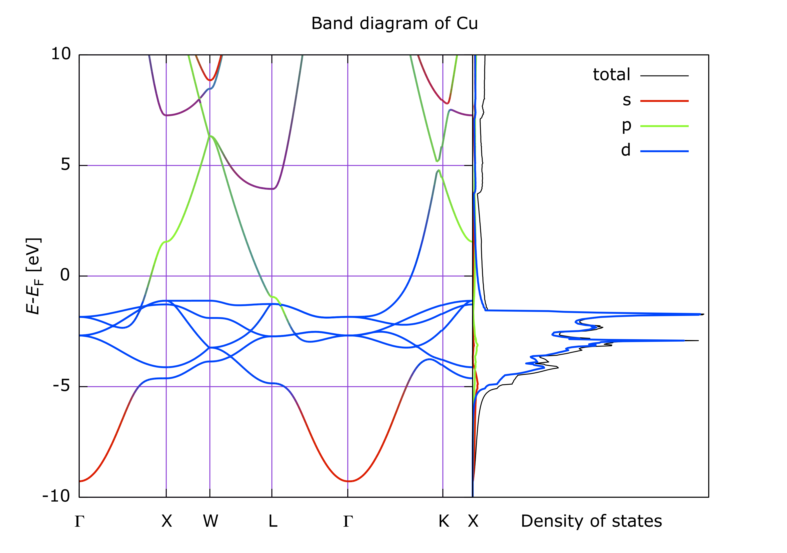
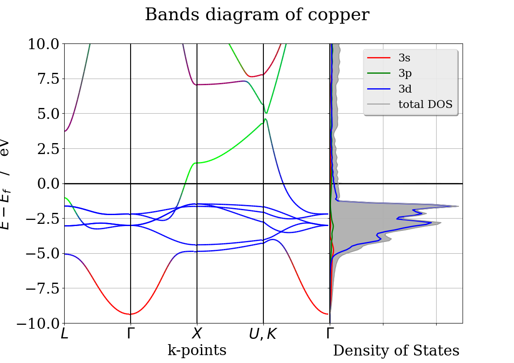
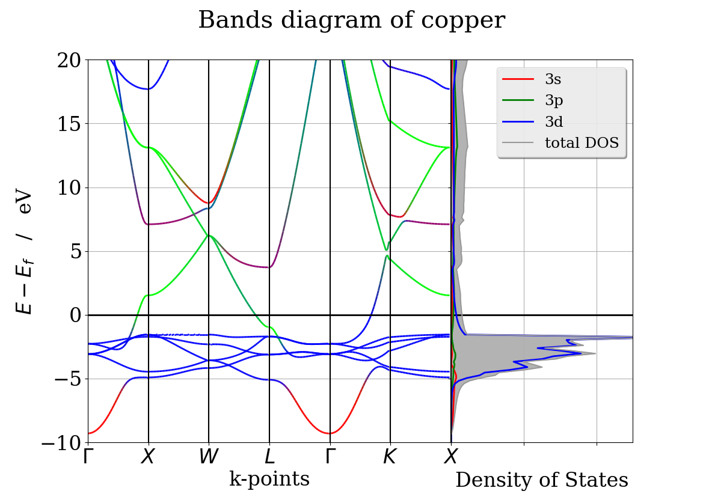
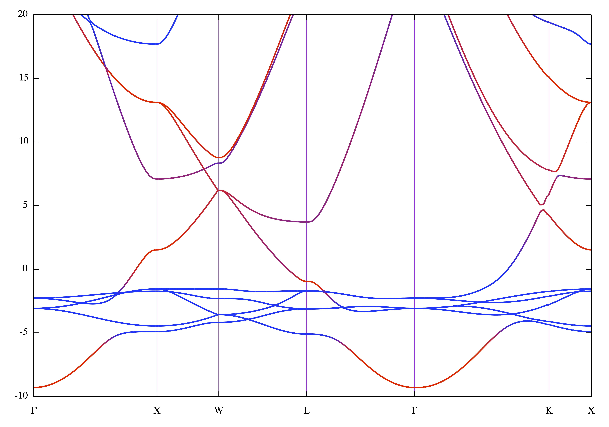
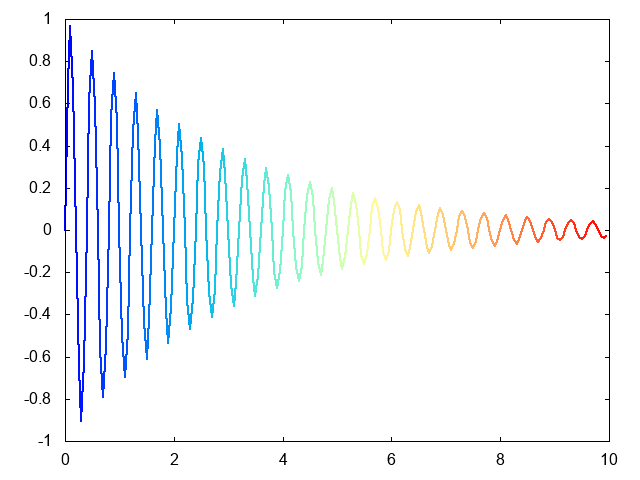

Cuのsp-dを区別したバンド図の描画
Table of Contents
1 イントロ
pymatgenで提供されていたようであるが，今はうまく描画できない． BSDOSPlotteroriginalのバンド図 があるがいくつかの不満な点がある． そこでrubyで描画アプリを作成した．
- python版で用意されているpymatgenのライブラリをPyCallで呼び出して，
- matplotlibの代わりにgnuplotを使い
- 線にgradationで色をつけ
- bandsとdosを同時にplot
している．完成版は次の通り．

Figure 1: spd color gradated bands and dos for Cuの完成版．
ruby pycall/vasp_pycall.rb 'vasp_results'
で作図される．
2 不満が残る図たち

Figure 2: originalのバンド図．
まず，k-pointsが単純すぎる．

Figure 3: originalのバンド図．
k-pointsを直したが，等間隔で気持ち悪い．

Figure 4: originalのバンド図．
> python bands_Cu_rev.py > tmp.txt > diff cu_data.txt tmp.txt > ruby read_data.rb
3 ここで使ったスキル
3.1 VASP計算
bandとdosを描画するためのvaspの計算はいくつかの注意が必要． 綺麗なバンド図を書くには，
- POSCARは1原子だけから構成されるようにする．
- 先ずは荒い計算で収束させておく
- dosは細かくとった方が良さそう
- bandsはlineモードで計算する
dos
> cat KPOINTS Automatic mesh 0 Auto 50 $ cat INCAR ISMEAR = 0 SIGMA = 0.01 # LORBIT = 11 $ cat POSCAR Cu metal rhomboedrique 3.620 0.5 0.5 0.0 0.0 0.5 0.5 0.5 0.0 0.5 1 Direct 0.0 0.0 0.0
次に精度を上げて計算．
$ cat INCAR ISMEAR = -5 SIGMA = 0.01 LORBIT = 11 EMIN = -10 EMAX = 10 NEDOS = 901 $ cat KPOINTS Automatic mesh 0 Auto 100
band
$ cat INCAR ISMEAR = 0 SIGMA = 0.01 LORBIT = 11 $ cat KPOINTS Line_mode KPOINTS file 40 Line_mode Reciprocal 0.0 0.0 0.0 ! \Gamma 0.5 0.0 0.5 ! X 0.5 0.0 0.5 ! X 0.5 0.25 0.75 ! W 0.5 0.25 0.75 ! W 0.5 0.5 0.5 ! L 0.5 0.5 0.5 ! L 0.0 0.0 0.0 ! \Gamma 0.0 0.0 0.0 ! \Gamma 0.375 0.375 0.75 ! K 0.625 0.25 0.625 ! U 0.5 0.0 0.5 ! X
あまりenergyの収束がよくないが，多分， line_modeではそうなのだろう．バンド図を書かせる時の常識か？
3.2 python - ruby 連携
pythonの結果をtextに出力して，それを読み込ませたが，意外と手間． pycallとnumo/gnuplotで作る方が気持ちいい．
テキストベース
printでtmp.txtとかに打ち出して，それをruby側で読み込む． jsonでのtransferの方が便利かも．．．
def get_ke_data(lines) data=[] m = lines[0].match(/\[\[\s+(.+)\]/) data << m[1].scanf("%f %f") lines.each do |line| if m = line.match(/\[\s+(.+)\]\]/) data << m[1].scanf("%f %f") end end return data end
などとして，matchとscanfで取るのが正解．これをmatchで 全部やとうとすると，時々入るfloatのe表示に対応できない．
rubyistがpycallでpython::Dictデータで苦労した話
PyCall Ruby版 Tipsにほぼ完璧な対応表がある． さらに，numpy特有の記法
# 最後の行へのアクセス pythonだと m[-1,:] と書くところ
などと，rubyistにわかりやすいnumpyの解説まで付いている．
require 'pycall/import' include PyCall::Import pyimport :math p math.sin(math.pi / 4) - Math.sin(Math::PI / 4) # => 0.0
という風に簡単にできそうに見える．．．
ところが，複雑なpythonのデータ構造を扱う時には 非常に苦労する．原因はdictのkeyがよくわからないから． 単純な文字を取る時にはいいが，少し複雑な文字表記による enumなどのkeyではうまく取れないようだ． 数字での取り出し，keysでの取り出しなどout. 唯一，
p arg1 = PyCall::Dict.({'Cu': PyCall::Tuple.(["s", "p", "d"])})
でPythonのDictでやったのは成功しているが，これを 汎化するのは難しそう． 以下の通りarrayにしてそこから数字で指定するのが手っ取り早そう．
症状と解決策
pymatgenにあるVasprun::tdosあるいは Vasprun::compolete_dos などは取れる．
p spd_dos = dosrun.complete_dos.get_spd_dos() とすると，
{<OrbitalType.s: 0>: <pymatgen.electronic_structure.dos.Dos object at 0x102dd4710>, <OrbitalType.p: 1>: <pymatgen.electronic_structure.dos.Dos object at 0x102dc2dd8>, <OrbitalType.d: 2>: <pymatgen.electronic_structure.dos.Dos object at 0x102d962b0>}
と出力される．これはspd_dos('OrbitalType.s')で取れそうに思うが だめ．そこで，
p s_d = spd_dos.to_a[0][1]
として
<pymatgen.electronic_structure.dos.Dos object at 0x10d435710>
となる．ここで，pymatgen.electronic_sctructure.dosでgoogleって， その先がdensitiesということをあたりをつけて，
p s_d = spd_dos.to_a[0][1].densities
として
{<Spin.up: 1>: array([ 0.00000000e+00, 0.00000000e+00, 0.00000000e+00,
0.00000000e+00, 0.00000000e+00, 0.00000000e+00,
...
0.00000000e+00])}
をえます．さらに
s_list = PyCall::List.(s_d.to_a[0][1]).to_a
としてs_dのhash構造をarrayにして[0][1]でvalsを取り出し， さらにそれをto_aで rubyが解釈できるdata構造に変換します．
慣れると同じcodeの繰り返しなんでそれほど苦労なくなるんですが， 多分時間が経てば忘れるね． そこをlibに組み込んで欲しいが，dictを直接読むのは文字だけのよう．．． code書いて，pull reqかけてみるか．
densitiesやenergyはnameがわからないとどうしようもなくて， これは，pymatgenのsource codeを読んで見つける． どうもpycallを使うには，こういうのを繰り返す必要がありそうだ． 以下は，gnuplotでpartial dosまで書いたやつ．
require 'pycall/import' include PyCall::Import pyimport :sys pyimport 'numpy', as: :np pyfrom 'pymatgen.io.vasp.outputs', import: :Vasprun # dos dosrun = Vasprun.("../dos_calc_fine/vasprun.xml") e_object = (dosrun.tdos.energies - dosrun.efermi) energy = PyCall::List.(e_object).to_a spd_dos = dosrun.complete_dos.get_spd_dos() spd = PyCall::Dict.(spd_dos) s_d = spd.to_a[0][1].densities s_list = PyCall::List.(s_d.to_a[0][1]).to_a p_d = spd.to_a[1][1].densities p_list = PyCall::List.(p_d.to_a[0][1]).to_a d_d = spd.to_a[2][1].densities d_list = PyCall::List.(d_d.to_a[0][1]).to_a tdos = dosrun.tdos.densities t_list = PyCall::List.(tdos.to_a[0][1]).to_a require 'numo/gnuplot' Numo.gnuplot do set yrange: '[-10:10]' plot [s_list, energy, w: :l, title: 's'], [p_list, energy, w: :l, title: 'p'], [d_list, energy, w: :l, title: 'd'], [t_list, energy, w: :l, title: 'total'] end
3.3 numo/gnuplot
- gnuplotが持っている資産，
あるいはgnuplotを使ってきた人の スキルをそのままrubyで活かせる．
- data加工や調整に馴染みのあるrubyが使えて，
- coding環境がそのままというのはとても便利．
線のgradation
細かい線に分割してrgbで指定しながら
def mk_band_plot_data(x, y, rgbs, plot_data, e_f=0.0) (x.size-1).times do |i| xx = [x[i],x[i+1]] yy = [y[i]-e_f,y[i+1]-e_f] rgb = rgbs[i] plot_data << [xx, yy, w: :l, lw: 2, lc_rgb: rgb, notitle: ''] end end
としてgradiation lineのplot_dataを作る. それを，
plot *band_plot_data
としてplotしている．
require 'numo/gnuplot' # an example of gradient line color plot, the original from # http://gnuplot-surprising.blogspot.com/2011/09/gradient-colored-curve-in-gnuplot0.html def f(x) return Math.exp(-0.33*x)*Math.sin(5.0*Math::PI*x) #The function to be plotted end n=100 #divide the whole curve into n segments plot_data = [] range = 10 #Plot the n segments of the curve n.times do |i| # i<=x*n/range && x*n/range<(i+1.5) ?f(x):1/0 \ x = [(i-0.5)/n*range,i.to_f/n*range,(i+0.5)/n*range] y = [f(x[0]),f(x[1]),f(x[2])] plot_data << [x, y, w: :l, lw: 2, lc: :palette, cb: i, notitle: ''] end Numo.gnuplot do set term: 'png' set output: "gradient_colored_curve1.png" # set samples: 300 #must be large enough for each segment have at least 2 samples set palette: 'rgbformulae 30,13,10' #rainbow palette set cbrange: "[0:#{n}]" set xrange: "[0:#{range}]" unset colorbox: '' #The colorbox will not plotted plot *plot_data end

Figure 5: gradationのline描画
複数の図のplot
二つの図を描画するセット．
set grid: 'ytics lt 2' set termoption: 'enhanced' set lmargin: 0 set rmargin: 0 set tmargin: 0 set bmargin: 0 set yrange: '[-10:10]' set multiplot: 'title "Band diagram of Cu" font ",18"' # dos gnuplot set size: '0.3, 0.8' set origin: '0.6, 0.1' set xrange: '[0:7]' set xlabel: '"Density of states" font ",18"' unset ytics: '' unset xtics: '' plot *dos_plot_data # band gnuplot set grid: 'xtics lt 1' set size: '0.5, 0.8' set origin: '0.1, 0.1' set xrange: "[0:#{range}]" set ytics: '"2.5" font ",18"' set xtics: x_tics_str set ylabel: '"{/Times-Italic E-E}_f [eV]" font ",18"' set xlabel: '"k-points" font ",18"' plot *band_plot_data unset multiplot: ''